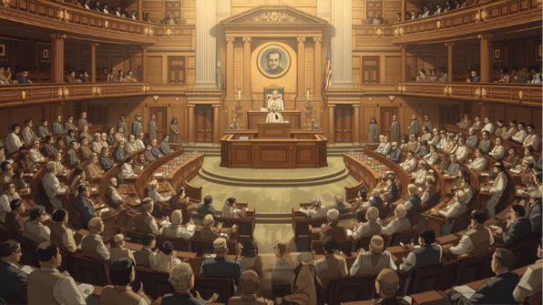

“
The Rules, as accepted by the Committee of the House, were adopted.
✓

Rules adopted · committees elected
Generated scene for orientation · not archival photography
The Rules, as accepted by the Committee of the House, were adopted.
The transcript is short. The index preserves every named speaking voice plus the explicit expunged-proceedings notation rather than silently deleting it.
Rules adoption → committee elections → Federal Court question → adjournment to January.